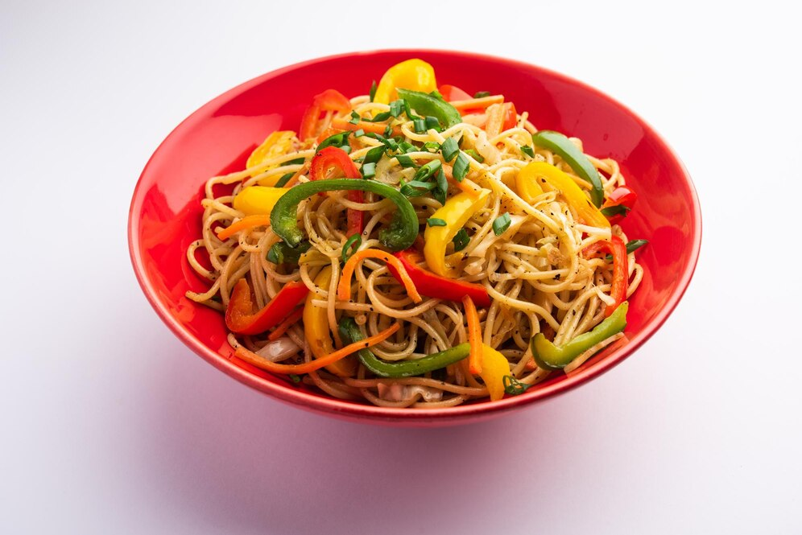

Chicken Noodles

Origin
The earliest written record of noodles is found in a book dated to the Eastern Han period (25–220 CE).[2] Noodles made from wheat dough became a prominent food for the people of the Han dynasty.
The oldest evidence of noodles was from 4,000 years ago in China.[2] In 2005, a team of archaeologists reported finding an earthenware bowl that contained 4000-year-old noodles at the Lajia archaeological site.[4] These noodles were said to resemble lamian, a type of Chinese noodle.
Ingridents
- 4 boned, skinned chicken breast halves (5 to 6 oz. each)
- 1 pound fresh Asian-style noodles
- 2 tablespoons salad oil
- 1 onion (about 8 oz.), peeled and thinly sliced
- ¼ cup chopped green onions (including tops)
- ¼ cup minced garlic
- ½ cup rice wine
- ¼ cup rice vinegar
- 3 tablespoons soy sauce
Steps To Prepare
- Rinse chicken and pat dry. Cut breast halves crosswise into 1/8-inch-wide strips.
- In a 5- to 6-quart pan over high heat, bring about 4 quarts water to a boil; add noodles and cook, stirring occasionally, until tender to bite, about 3 minutes. Drain noodles and return to pan.
- Meanwhile, pour oil into a 10- to 12-inch frying pan over medium-high heat. When hot, add onion, mushrooms, green onions, and garlic; stir often until onion and mushrooms begin to brown, about 8 minutes. Add chicken and stir often until no longer pink in the center (cut to test), about 3 minutes. Add rice wine, vinegar, and soy sauce; cook to blend flavors, 1 to 2 minutes longer.
- Add chicken mixture to noodles in pan and stir over medium-high heat until hot, 2 to 3 minutes. Divide equally among four wide bowls.